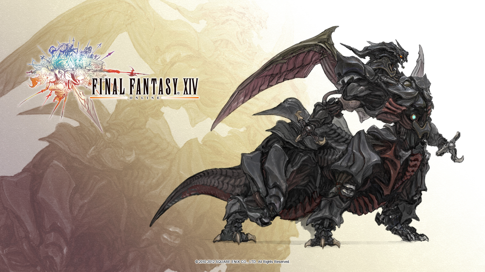

BEST RPG GAMES
World of Warcraft

World of Warcraft (WoW) is a massively multiplayer online role-playing game (MMORPG) released in 2004 by Blizzard Entertainment. Set in the Warcraft fantasy universe, World of Warcraft takes place within the world of Azeroth, approximately four years after the events of the previous game in the series, Warcraft III: The Frozen Throne.[3] The game was announced in 2001, and was released for the 10th anniversary of the Warcraft franchise on November 23, 2004. Since launch, World of Warcraft has had eight major expansion packs: The Burning Crusade (2007), Wrath of the Lich King (2008), Cataclysm (2010), Mists of Pandaria (2012), Warlords of Draenor (2014), Legion (2016), Battle for Azeroth (2018), and Shadowlands (2020). [Reference] [Where to find]
Final Fantasy XIV
Final Fantasy XIV is a massively multiplayer online role-playing game (MMORPG) developed and published by Square Enix. Directed and produced by Naoki Yoshida, it was released worldwide for Microsoft Windows and PlayStation 3 in August 2013, as a replacement for the failed 2010 version of the game, with support for PlayStation 4, PlayStation 5, and macOS releasing later. Final Fantasy XIV takes place in the fictional land of Eorzea, five years after the events of the original 2010 release. At the conclusion of the original game, the primal dragon Bahamut escapes from its lunar prison to initiate the Seventh Umbral Calamity, an apocalyptic event which destroys much of Eorzea. Through the gods' blessing, the player character escapes the devastation by time traveling five years into the future. As Eorzea recovers and rebuilds, the player must deal with the impending threat of invasion by the Garlean Empire from the north. [Reference] [Where to find]
Guild Wars 2

Guild Wars 2 is a massively multiplayer online role-playing game developed by ArenaNet and published by NCSoft and ArenaNet. Set in the fantasy world of Tyria, the game follows the re-emergence of Destiny's Edge, a disbanded guild dedicated to fighting the Elder Dragons, a Lovecraftian species that has seized control of Tyria in the time since the original Guild Wars. The game takes place in a persistent world with a story that progresses in instanced environments. Guild Wars 2 claims to be unique in the genre by featuring a storyline that is responsive to player actions, something which is common in single player role-playing games but rarely seen in multiplayer ones. A dynamic event system replaces traditional questing, utilising the ripple effect to allow players to approach quests in different ways as part of a persistent world. Also of note is the combat system, which aims to be more dynamic than its predecessor by promoting synergy between professions and using the environment as a weapon, as well as reducing the complexity of the Magic-style skill system of the original game. [Reference] [Where to find]
Dofus

Dofus is a tactical turn-oriented massively multiplayer online role-playing game (MMORPG) developed and published by Ankama Games, a French computer game manufacturer. Originally released solely in French, it has since been translated into many other languages. The game includes both pay-to-play accounts offering the full experience and free-to-play accounts offering a more limited amount of content. Its success has led to the marketing of spin-off products, such as books, art, comics and a movie released in 2016. It has also led to the development of two continuations: Dofus Arena, released at the beginning of 2006, which is an alternative "tournament" version of Dofus; and Wakfu, a continuation of Dofus.[citation needed] The game has attracted over 40 million players worldwide and is especially well known in France. [Reference] [Where to find]
Albion

Albion Online (AP) is a free medieval fantasy MMORPG developed by Sandbox Interactive, a studio based in Berlin, Germany. During the beta stages of development, players were able to purchase "Founder's Packs" to gain access to the closed beta play-tests which were run intermittently by Sandbox Interactive, typically after an interval of a few months of development. After the release of the game, these founder's packs were made unavailable for purchase. Albion Online removed its free-to-play model for various reasons on December 30, 2015. (Which was then made free again at a later date) When it initially released on July 17, 2017, Albion Online offered a selection of "Starter Packs" which granted players access to the game and offered a varying amount of gold to get started. Once a player purchased any of the starter packs, they would be granted open-ended access to the game with no extra mandatory fees. Players can also purchase membership for a limited amount of time without the benefits of the starter packs. As of April 10, 2019, Albion Online has gone Free to Play. [Reference] [Where to find]